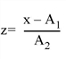
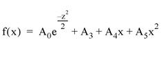
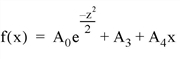
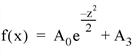
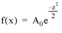

The GAUSSFIT function computes a non-linear least-squares fit to a function f ( x ) with from three to six unknown parameters. f ( x ) is a linear combination of a Gaussian and a quadratic; the number of terms is controlled by the keyword parameter NTERMS.
This routine is written in the IDL language. Its source code can be found in the file gaussfit.pro in the lib subdirectory of the IDL distribution.
Result = GAUSSFIT( X , Y [, A ] [, CHISQ = variable ] [, ESTIMATES = array ] [, MEASURE_ERRORS = vector ] [, NTERMS = integer {3 to 6}] [, SIGMA = variable ] [, YERROR = variable ])
Returns three to six values that are the non-linear least squares fit to a function f ( x ).
An n -element vector containing the independent variable values. X may be of type integer, floating point, or double-precision floating-point.
A vector of dependent variables, the same length as X .
A named variable that will contain the coefficients A of the fit.
Set this keyword to a named variable that will contain the value of the reduced chi-square goodness-of-fit statistic.
Set this keyword equal to an array of starting estimates for the parameters of the equation. If the NTERMS keyword is specified, the ESTIMATES array should have NTERMS elements. If NTERMS is not specified, the ESTIMATES array should have six elements. If the ESTIMATES array is not specified, estimates are calculated by first subtracting a constant (if NTERMS >= 4) or a linear term (if NTERMS >= 5), and then forming a simple estimate of the Gaussian coefficients.
Note: If ESTIMATES[2] (the Gaussian width) is zero, then GAUSSFIT will automatically compute a best guess for the starting value for this term.
Set this keyword to a vector containing standard measurement errors for each point Y [ i ]. This vector must be the same length as X and Y .
Note: For Gaussian errors (e.g., instrumental uncertainties), MEASURE_ERRORS should be set to the standard deviations of each point in Y . For Poisson or statistical weighting, MEASURE_ERRORS should be set to SQRT( Y ).
Set this keyword to an integer value between three and six to specify the function to be used for the fit. The values correspond to the functions shown below. In all cases:





NTERMS=6 is the default setting. Here, A0 is the height of the Gaussian, A1 is the center of the Gaussian, A2 is the width (the standard deviation) of the Gaussian, A3 is the constant term, A4 is the linear term, and A5 is the quadratic term.
Tip: The full width at half maximum (FWHM) of the Gaussian may be computed as 2*SQRT(2*ALOG(2))*A2.
Set this keyword to a named variable that will contain the 1-sigma error estimates of the returned parameters.
Note: If MEASURE_ERRORS is omitted, then you are assuming that a polynomial is the correct model for your data, and therefore, no independent goodness-of-fit test is possible. In this case, the values returned in SIGMA are multiplied by SQRT(CHISQ/( N * M )), where N is the number of points in X , and M is the number of coefficients. See Section 15.2 of Numerical Recipes in C (Second Edition) for details.
Set this keyword to a named variable that will contain the standard error between YFIT and Y.
The following example shows how to use GAUSSFIT to fit to four different functions, with NTERMS=3,4,5,6. To simulate actual data, random noise has been added to each function.
pro ex_gaussfit
; Define the independent variable.
n = 101
x = (FINDGEN(n)-(n/2))/4
; Define the coefficients.
a = [4.0, 1.0, 2.0, 1.0, 0.25, 0.01]
print, 'Expected: ', a
z = (x - a[1])/a[2] ; Gaussian variable
!P.MULTI = [0,2,2] ; set up 2x2 plot window
seed = 123321 ; Pick a starting seed value
for nterms=3,6 do begin
; Define the dependent variables. Start with random noise.
y = 0.4*RANDOMN(seed, n)
; Use a switch statement so we fall through to each term.
switch nterms of
6: y = y + a[5]*x^2
5: y = y + a[4]*x
4: y = y + a[3]
3: y = y + a[0]*exp(-z^2/2)
endswitch
; Fit the data to the function, storing coefficients in
; coeff:
yfit = GAUSSFIT(x, y, coeff, NTERMS=nterms)
print, 'Result: ', coeff[0:nterms-1]
; Plot the original data and the fitted curve:
PLOT, x, y, TITLE='nterms='+STRTRIM(nterms,2)
OPLOT, x, yfit, THICK=2
endfor
end
When this program is compiled and executed, IDL prints the following results:
IDL> ex_gaussfit
Expected: 4.00000 1.00000 2.00000 1.00000 0.250000 0.0100000
Result: 3.95437 1.03176 2.07216
Result: 4.38669 0.948479 1.84426 0.909676
Result: 3.93348 0.839296 2.02112 1.05237 0.249002
Result: 3.80389 0.993375 2.07302 1.16684 0.249051 0.0484357
|
Original |
Introduced |
|
5.6 |
Added CHISQ, SIGMA, and YERROR keywords |
|
6.0 |
Added MEASURE_ERRORS keyword |
COMFIT , CURVEFIT , GAUSS2DFIT , POLY_FIT , REGRESS , SFIT , SVDFIT